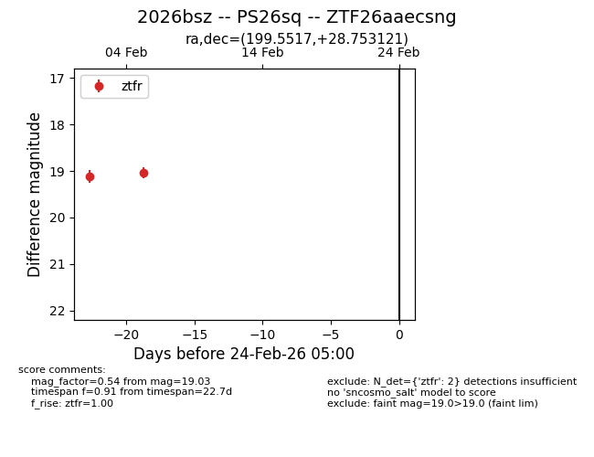
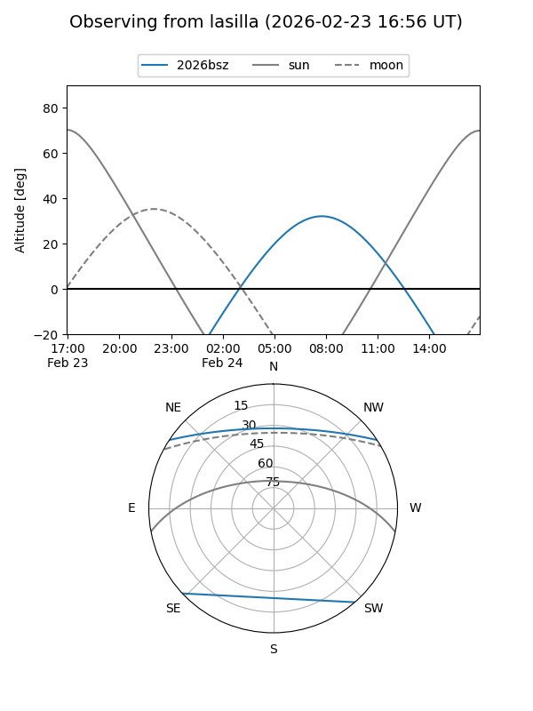
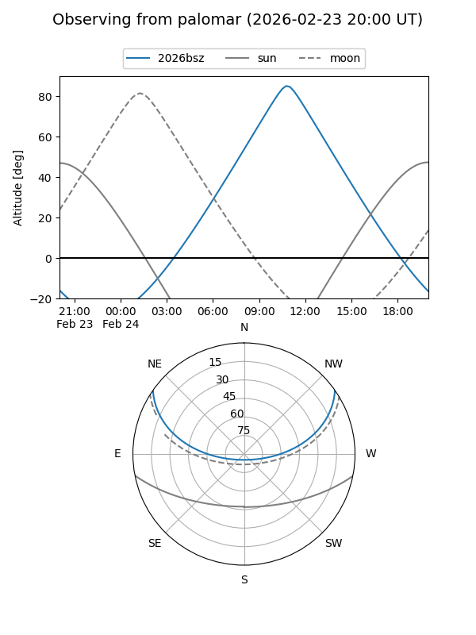

2026bsz
Target 2026bsz at 2026-02-24 09:08
Aliases and brokers:
FINK: link
Lasair: link
ALeRCE: link
TNS: link
YSE: link
alt names
ZTF26aaecsng (ztf,fink_ztf)
2026bsz (tns,yse)
PS26sq (panstarrs)
Coordinates:
equatorial (ra, dec) = 199.5517,+28.75312
equatorial (HMS+DMS) = 13:18:12.40,+28:45:11.24
galactic (l, b) = (49.8518,+83.86974)
Flags:
Photometry:
last ztfr=19.03
2 ztfr detections
Lightcurve

Visibility


Additional plots